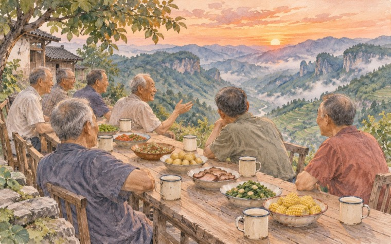
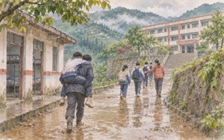

太和街村 · 雪岩顶 · 2025 年宋兆军请老兵吃长桌宴晚饭摆到了雪岩顶。130 多位来茅田避暑的退役军人，一起看了日落。AI 场景插画读故事
太和街村 · 2022 年客人要赶路，周孝珍连夜蒸了包子一位武汉客人临时要回家。临走前，主人还惦记着他路上的一顿饭。AI 场景插画读故事
太和街村 · 2022 年周孝珍把自家让出来评理为了承包地，她同邻居争过好几年。后来村里再有争执，乡亲们会到她家坐坐。AI 场景插画读故事
小茅田村 · 2018 年一顿晚饭，接上了三十五年的寻亲路田先生把迷路的老人请进门。第二天清早，老人的女儿从武汉赶到了茅田。AI 场景插画读故事
青岩村 · 2020 年调岗前，他又走了一趟护蜂的山路民警尹磊要去新岗位了。临行前，他专程来见山里的蜂农李昌云。AI 场景插画读故事

茅田民族初级中学 · 2023 年从宿舍到食堂，老师们走了十多趟山洪漫进宿舍一楼时，许多孩子还在睡。地势更高的食堂，成了那天清晨要去的地方。AI 场景插画读故事
三道岩村 · 茅田集镇 · 2026 年从教人采茶，到递上一杯姜茶游客在茶园里学着辨认一芽一叶，到了集镇，还有人帮他们找车位、认路。报道实拍读故事